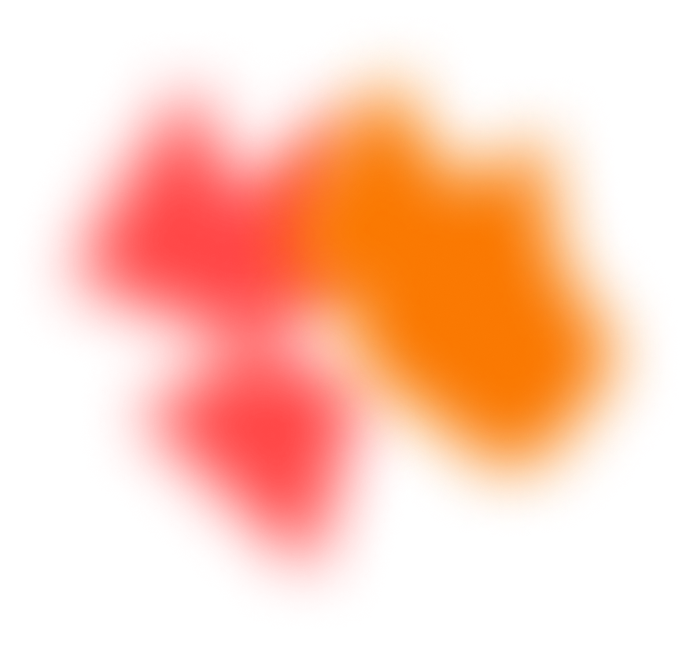
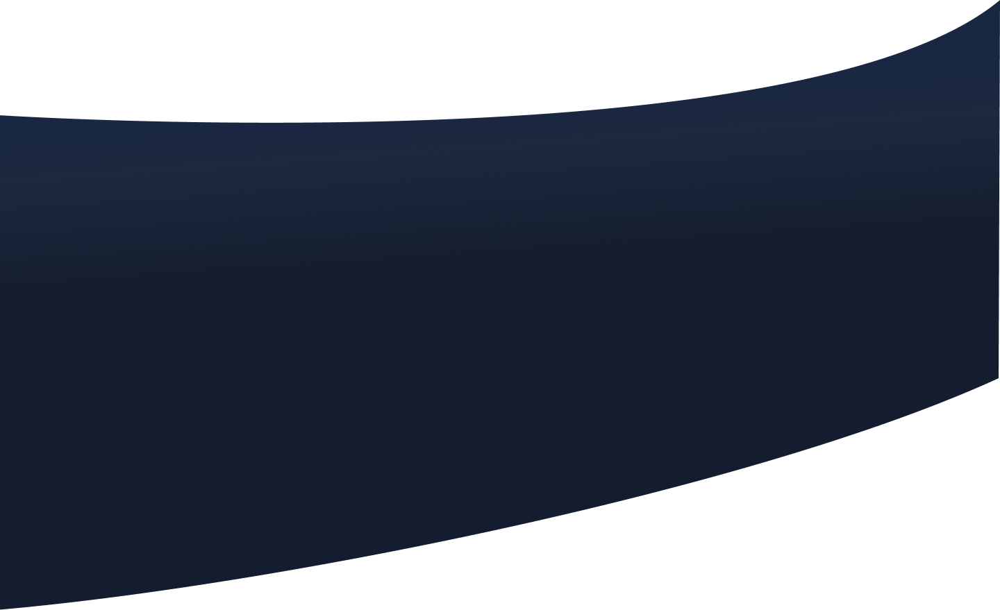

<div id="section-aboutMe" class="containerAboutMe">
    <div class="aboutMe">
        <h2>About Me</h2>
        <p>I am a front-end developer from Upper Austria who completed my education at the Developer Academy. I love to
            develop websites and applications and strive to fully live out my passion in this field. My goal is to
            continuously improve my skills and take on new challenges in my profession.</p>
        <div>
            
            <p>I am an ambitious, assertive, and committed individual who enjoys sports. To balance my office work, I go
                to the gym about 5 times a week to stay fit and healthy. Sports is a great passion of mine that gives me
                the necessary energy and endurance to be successful professionally.</p>
        </div>
        <div>
            
            <p>I have worked as a dental assistant in the past, but never felt 100% comfortable in that role. I
                discovered my passion for technology early in my life, starting with Lego Technic and working my way up
                to the PC. Today, I am a front-end developer and have found my calling. I love being creative and
                developing innovative websites and applications that excite people.</p>
        </div>
    </div>

    
    
    
</div>